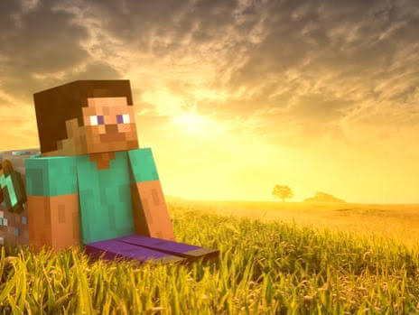

¿Qué es Minecraft?
Minecraft es un juego de construcción en el que los jugadores pueden crear y destruir bloques en un mundo tridimensional generado proceduralmente.
Características principales
- Exploración de mundos infinitos
- Construcción y creación de estructuras
- Modo multijugador
- Actualizaciones constantes con nuevas características
Información del juego
Minecraft fue creado por Markus Persson y lanzado en 2011. Desde entonces, ha ganado una gran popularidad y se ha convertido en uno de los juegos más vendidos de todos los tiempos.
| Modos de juego y su descripción | |
|---|---|
| Sobrevivencia | El modo de juego clásico donde los jugadores deben recopilar recursos, crear estructuras y sobrevivir a criaturas hostiles. |
| Creativo | Un modo donde los jugadores tienen acceso ilimitado a todos los bloques y pueden volar, lo que permite la creación de estructuras sin restricciones. |
| Aventura | Un modo diseñado para mapas personalizados, donde los jugadores pueden interactuar con objetos y completar desafíos específicos. |
| Espectador | Un modo donde los jugadores pueden volar a través de bloques y observar el mundo sin interactuar con él. |
Imagen de Minecraft
